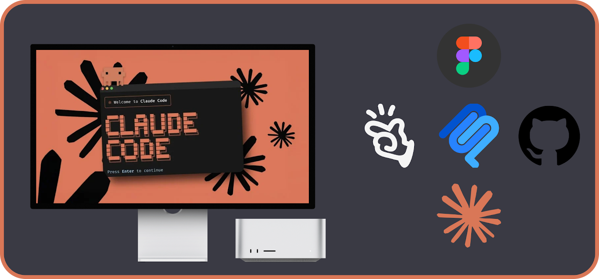

Claude Code & Designing with AI
New!Using AI in design workflows is now part of reality. Using AI to brainstorm and prototype is not only possible, but increasingly expected of Product Designers today. There are two possible approaches: 1- design and prototype directly with AI, or 2- Use Figma MCP to maintain manual control over the design.
View more →